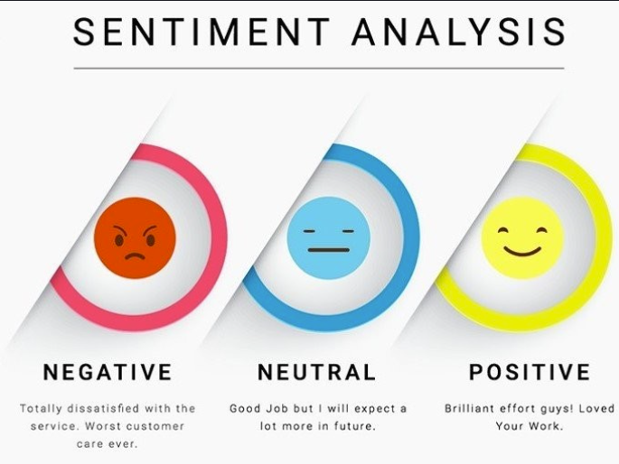

Passionate about Data Analytics, Business Intelligence, Artificial Intelligence, and Machine Learning.
I am a Computer Science student at SR University with a strong interest in Data Analytics, Business Intelligence, Artificial Intelligence, and Machine Learning.
I enjoy solving real-world problems using Python, SQL, Power BI, and Machine Learning while transforming raw data into meaningful insights that support better business decisions.
Programming
Web Development
Database
Data Analytics
Data Science
Version Control
Analyzed customer churn using Python, Pandas, Matplotlib and Power BI. Built dashboards, performed cohort analysis and generated business insights.
View Project
Built Machine Learning, CNN, LSTM and BERT models for sentiment classification with BERT achieving around 90% accuracy.
View ProjectDuration: 10 Weeks
Thank you for visiting my portfolio.